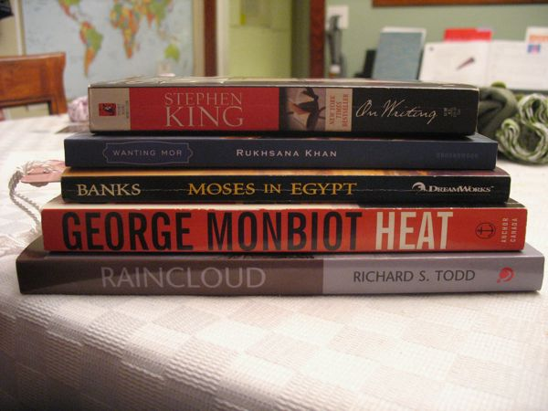

Read-A-Thon Reading List
As I mentioned a couple of weeks ago, I signed up for Dewey's 24-Hour Read-a-Thon. I signed up, and then promptly forgot about it until earlier this week when I kinda vaguely thought, "Hey, isn't that soon?"
It's this weekend. Fortunately there's not much preparation required. I set up a fundraising page on the amazing FirstGiving site to raise money for Books for Africa. (I already raised $145!)
And I picked a stack of books to read:

I'm sure I won't get through all those, but I wanted to give myself some variety so I can switch it up. (Blake suggested I just pick one Neal Stephenson epic for the whole 'thon. No.)
So Stephen King's On Writing because the last time I read it I came away feeling like I could be a writer, in some crazy dreamland when I can do wacky things like work with words and not hate my job – now that I'm living in that world I want to revisit Mr King's writing on writing.
Wanting Mor by Rukhsana Khan is a YA novel I bought with a gift card I got from Delphine's teacher last year for being class mom. It's about a girl in post-Taliban Afghanistan (does that even exist yet?) – that's all I know but (like most novel readers, I suppose) I love to learn about other lives and times and places through books.
Moses in Egypt by Lynne Reid Banks is based on the movie Prince of Egypt, one of my favourite animated movies, and the Book of Exodus. I've already started it and am enjoying it so far, although the prose doesn't have the fluid luminosity of the movie.
Heat by George Monbiot is a fairly old climate change book, but I feel I should read it to have a more complete understanding of the issue.
Raincloud by Richard S. Todd is a wildcard – it's by a work associate of my father-in-law. It's a mystery set in Ontario. Maybe it's awesome? I will report back.
I have a few other books on my TBR shelf if I get through/sick of all those. I'll be blogging or Facebooking or otherwise updating my status online as I go.
Comments
Comments powered by Disqus